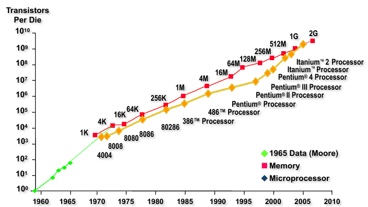
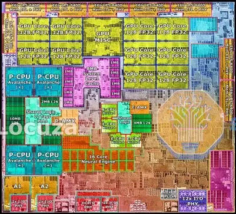
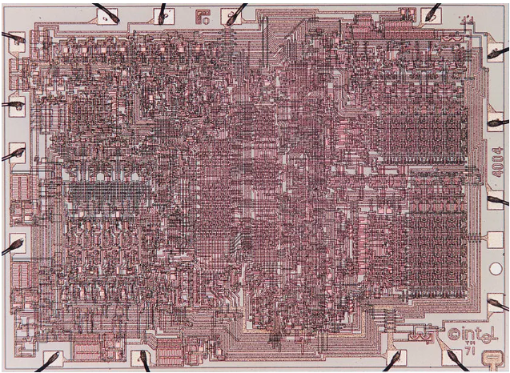
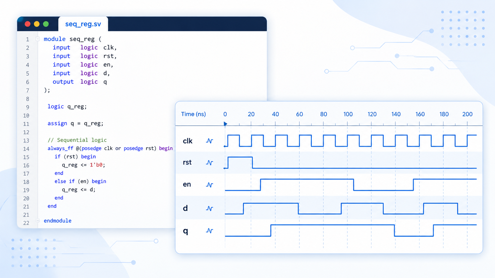
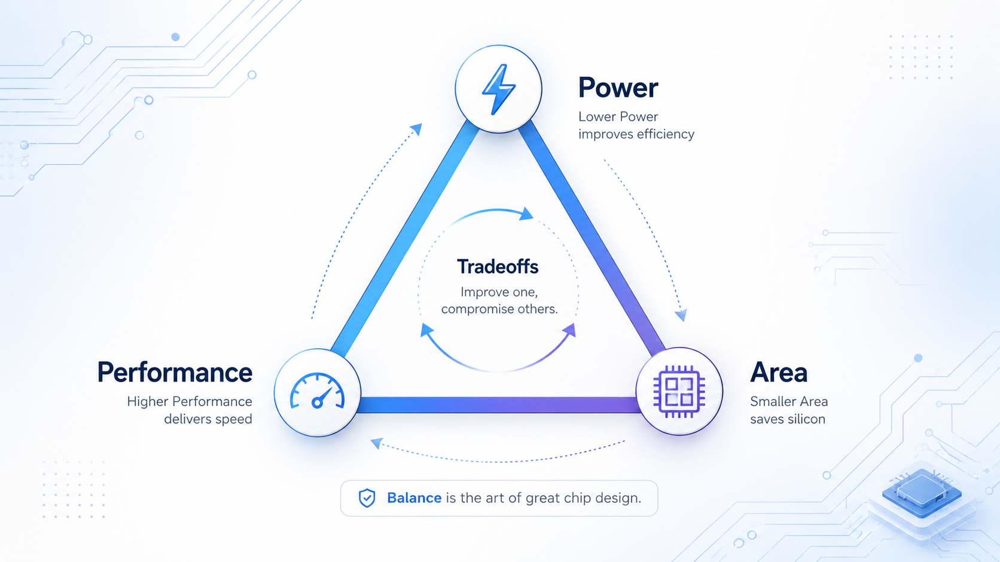
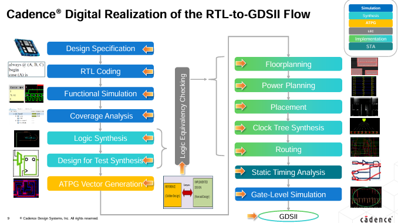

Understand scaling
Connect semiconductor technology trends with circuit behavior and system-level consequences.


Very Large Scale Integration is the process of combining millions—or billions—of transistors on a single chip. It enables powerful processors, memories, and systems-on-chip while balancing speed, energy, area, and cost.
This course introduces VLSI system design from technology scaling through architecture optimization. Students investigate device-, circuit-, and system-level trade-offs through focused analysis and HDL-based design tasks.

Connect semiconductor technology trends with circuit behavior and system-level consequences.

Build synthesizable hardware descriptions and reason about the resulting implementation.

Evaluate and improve performance, power, and area across competing microarchitectures.

Move from RTL through synthesis and implementation while reading reports critically.
Class representatives should schedule assessments for other courses so they do not clash with the tentative EE476 schedule.
If a student misses an exam or another assessment, that assessment will not be retaken.
Bring the lab manual in soft form. Mobile or smart phones may not be used to view it; marks may be deducted for doing so.
The lab manual and lab/theory slides are updated regularly. Download the latest versions before each lab, and do not print the entire lab manual.
Before leaving, return chairs to their proper place, switch off the lab computer, fans and lights, do not write on tables, and do not leave wrappers or other litter. Ethics, punctuality, attitude and discipline are also graded.
Past and future of digital ICs, Moore's Law, Dennard scaling, design tradeoffs, hierarchy, methodologies, challenges, metrics, and IC costs.
Abstraction layers, implementation alternatives, ASIC flow, physical implementation, packages and chiplets, fabrication, and nFET fundamentals.
CMOS inverter and gates, transmission gates, multiplexers, tristate buffers, latches, and flip-flops.
Clock-period limits, setup/hold and clock-to-Q timing, gate/path/wire delay, slack, rebuffering, and HDL effects on delay.
Dynamic transistor model, transistor sizing, inverter delay, fanout, staged buffers, optimum delay, and timing violations.
Energy efficiency, dynamic/short-circuit/leakage power, threshold-voltage tradeoffs, low-power design techniques, and thermal management.
SRAM cells and periphery, wordlines/bitlines, sense amplifiers, read/write operation, and decoder design.
Column decoding, sense amplification, precharge circuitry, race-to-halt, and rise/fall-time problems.
1T DRAM, multi-ported memories, memory organization changes, FPGA logic cells, interconnects, LUTs, slices, and FPGA memories.
Trees, associativity, hardware performance-cost tradeoffs, loops, pipelining, carry-dependent loops, and C-slow parallelism.
RT notation, NUMA performance analysis, resource-utilization charts, ad hoc scheduling, and modulo scheduling.
Ripple-carry adders, subtractors, parallel-prefix trees, carry-select adders, and carry-look adders.
Carry-look-ahead and parallel-prefix adders, bit-serial addition, shift-and-add multiplication, and array multipliers.
Baugh-Wooley multiplication and radix-4 Booth recoding; the second scheduled lecture is a holiday.
Constant/variable shifting, CSD and KCM multipliers, log/barrel shifters, crossbar switches, packaging, ESD, electromigration, IR drop, noise, and decoupling.
Clock skew and jitter, clock distribution, design/manufacturing/runtime faults, scan chains, sparing, single-event effects, and Hamming ECC.
Course and Lab Instructor
Office hours: Wednesday and Thursday, 9:30 AM–11:00 AM
1st Floor, Department of Electrical Engineering
Course Instructor
Office hours: To be announced
Department of Electrical Engineering
Email: to be announced